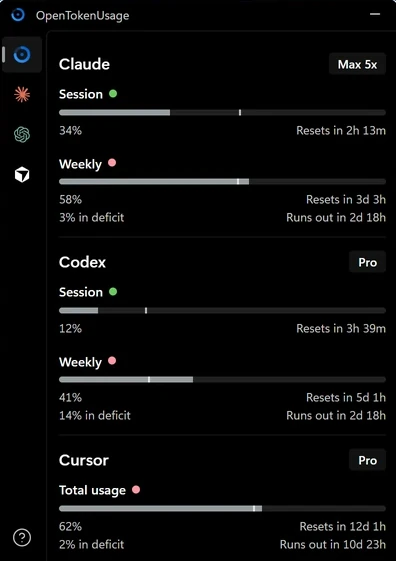
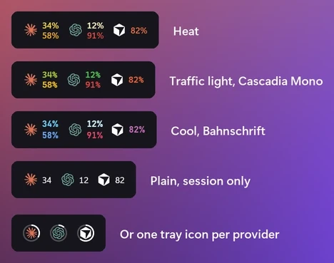

Every AI coding limit, next to your clock.
A free Windows 11 tray app that shows how much of Claude, Codex, Cursor and 13 other subscriptions you've used: session and weekly limits, credits, when they reset, and whether you're on pace.
winget install PowerUserZ.OpenTokenUsage

The top number is your session. The bottom one is your week.
Turn on the taskbar strip (experimental) in Settings and each provider you pick gets a logo and two numbers. Open the panel for the rest.
- Top number
- The session limit, the one that resets every few hours.
- Bottom number
- The weekly limit.
- Color
- Starts in the taskbar's text color and warms up to yellow, orange and red as you use more.
- Logo
- Which provider. Up to 6, in the order you choose.
On every limit
- 34%
Used
How much of the limit is gone.
- in 2h 13m
Resets
When the limit starts over.
- 3% in deficit
Pace
Whether you're ahead of or behind an even pace to the reset.
- in 2d 18h
Runs out
When you'll hit the limit at this rate.
When it speaks up
- 80% and 95% by default
Usage levels
A notification at the levels you pick, once per limit until it resets.
Pace and resets
When you're on pace to run out before a reset, and when a limit you'd nearly used up resets.
Sounds
Windows' default, eight built-in sounds or your own file. Quiet during Do Not Disturb.
One-click fixes
Errors come with the fix: run the login command in a terminal, or open the provider's API key page and Windows' Environment Variables.
Service status
A badge on the card when the provider's status page reports an incident (for providers with a public status page).
Make the taskbar yours
Pick what sits next to the clock in Settings. The taskbar strip is experimental: Windows has no official place for it, so a Windows update may move or hide it.
Tray icon
The app icon, a percent, bars, or one number or logo ring per provider.
- Up to 6
Taskbar strip
Logos with session and weekly numbers inside the taskbar, in your fonts, sizes, colors and order.
The panel
Open it from the tray, the strip or a global shortcut. Pin it above other windows, or turn on Remember position and it opens wherever you drag it.

Works with 16 providers
Each provider is a small plugin, so adding one is easy. New providers arrive with app updates.
Amp
Free tier, bonus, credits
Antigravity
Gemini and Claude models, session and weekly
Claude
Session, weekly, Fable, extra usage, rate limit resets, local token usage (ccusage)
Codex
Session, weekly, reviews, credits
Copilot
Credits, extra usage, chat, completions
Cursor
Credits, total usage, requests, auto usage, API usage, Grok Bot, on-demand, bonus spend
Devin
Weekly and daily quota, extra usage
Factory / Droid
Standard, premium tokens
Grok
Weekly limit, credits used, pay-as-you-go cap
JetBrains AI Assistant
Quota, remaining
Kimi Code
Session, weekly
Kiro
Credits, bonus credits, overages
MiniMax
Coding plan session
OpenCode Go
5-hour, weekly and monthly limits
Synthetic
5-hour rate limit, subscription, tool calls, search
Z.ai
Session, weekly, web searches
Missing one? Write a plugin with the Plugin API and open a pull request.
Not affiliated with any of these providers. Names and logos belong to their owners.
At home on Windows 11
Mica and your accent color
The panel takes Windows' backdrop and your accent color.
Dark and light
A pure black dark theme and a light one.
11 languages
English, Deutsch, Español (España and Latinoamérica), Français, Italiano, 日本語, 한국어, Português (Brasil), Türkçe and 简体中文.
Follows the taskbar
Tray icons and the strip switch between light and dark the moment the taskbar does.
Your usage stays on your PC
No telemetry
The app sends no analytics. Usage goes from each provider to your PC and nowhere else. Besides the providers you turn on, it contacts only their status pages, and GitHub for updates.
- 127.0.0.1:6736
Local HTTP API
On by default: other apps on your PC can read your usage. Loopback only; browsers are refused.
Proxy
Route provider requests through a SOCKS5 or HTTP proxy, set in a config file.
Updates
Checks for new releases every 6 hours and downloads them. Installs when you click Restart to update.
Open source
MIT licensed. Every line is on GitHub.
Install it in one line
Paste this into Windows Terminal:
winget install PowerUserZ.OpenTokenUsage
Or download the installer and run it. Either way, the app keeps itself up to date.